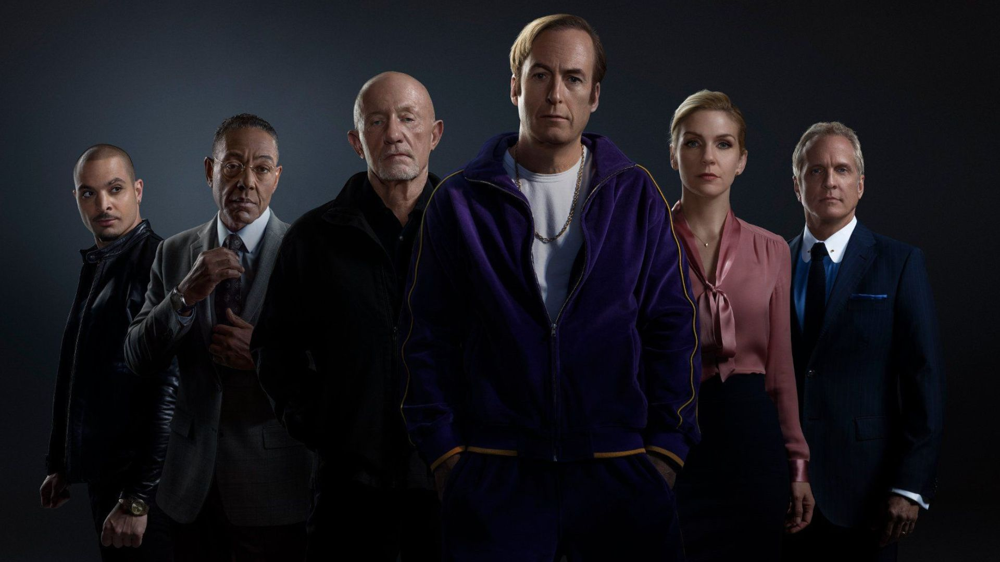

A temporada se passa em 2002, seis anos antes dos eventos de Breaking Bad , e apresenta Bob Odenkirk reprisando seu papel como James Morgan "Jimmy" McGill, conhecido em Breaking Bad como Saul Goodman. Jimmy é um advogado em dificuldades que cuida de seu irmão bem-sucedido Chuck. Jonathan Banks também reprisa seu papel como Mike Ehrmantraut, um atendente de estacionamento que também é um criminoso.
Esta temporada, como a anterior, acontece principalmente em 2002, com Bob Odenkirk reprisando seu papel como Jimmy McGill, um advogado que tem uma rixa com seu irmão Chuck (Michael McKean). Logo Kim Wexler (Rhea Seehorn), uma advogada da Hamlin, Hamlin & McGill (HHM) que é amante de Jimmy e ex-colega de correspondência, deixa a advocacia na HHM para iniciar uma prática solo no escritório que ela compartilha com Jimmy. Jonathan Banks reprisa seu papel como Mike Ehrmantraut; ele está envolvido em um conflito com o cartel de drogas mexicano após uma briga com Tuco (Raymond Cruz), que foi orquestrada por Nacho Varga (Michael Mando). Isso resulta em Mike sendo alvo do tio de Tuco, Hector (Mark Margolis)
A terceira temporada segue imediatamente os eventos da segunda temporada, que acontecem no final de 2002. O ano é 2003 pela conclusão da terceira temporada. Bob Odenkirk reprisa seu papel como Jimmy McGill, um advogado que está envolvido em uma briga com seu irmão Chuck (Michael McKean), um advogado que acredita que Jimmy não é adequado para ser advogado e planeja expulsá-lo. Jonathan Banks também reprisa seu papel como Mike Ehrmantraut, que inicia uma parceria com Gustavo Fring (Giancarlo Esposito), enquanto Nacho Varga (Michael Mando) planeja assassinar seu rival, Hector Salamanca (Mark Margolis).
A primeira e segunda temporadas ocorreram principalmente em 2002, com a terceira temporada avançando o enredo para 2003. A quarta temporada também ocorre principalmente em 2003, com os últimos quatro episódios ocorrendo em 2004 após um salto no tempo no sétimo episódio. Na quarta temporada, Jimmy e Kim lutam para lidar com a morte de Chuck. Howard acredita que ele é o responsável pela morte de Chuck, e sofre com depressão e afastamento do trabalho. Mike inicia inspeções de segurança em Madrigal, desconsiderando o fato de que seu contrato de consultoria deveria ser apenas uma transação em papel. Gus desconfia de Nacho após o derrame de Hector. Nacho se torna uma toupeira para Gus dentro da organização Salamanca. Gus contrata um engenheiro e uma equipe de construção para começar a construção do "super laboratório" de metanfetamina sob a lavanderia industrial. Lalo Salamanca chega para começar a administrar o negócio de drogas da família
A quinta temporada começa de onde a quarta parou, também ocorrendo em 2004, quatro anos antes de Jimmy McGill (Odenkirk) conhecer Walter White (Bryan Cranston) e Jesse Pinkman (Aaron Paul). A temporada mostra a evolução de Jimmy para o personagem titular, advogado de defesa criminal Saul Goodman, depois de recuperar sua licença de direito, enquanto rejeita totalmente a boa vontade que Howard Hamlin (Fabian) estende a ele após a morte de seu irmão Chuck. Kim Wexler (Seehorn) está consternada com a natureza secreta e esporádica de Jimmy, bem como sua própria vontade de seguir os motivos moralmente ambíguos de Jimmy para seguir em frente em seu caso. A presença de Lalo Salamanca (Dalton) em Albuquerque perturba o negócio legítimo de restaurantes de Gus Fring (Esposito) e sua reputação com o Cartel de Juárez. Tanto Nacho Varga (Mando), temendo pela segurança de seu pai, quanto Mike Ehrmantraut (Banks), que está lutando para lidar com a morte de Werner Ziegler, são pegos entre Gus e o conflito de Lalo, eventualmente atraindo Jimmy e Kim.
Os primeiros nove episódios acontecem principalmente em Albuquerque, Novo México, em 2004, quatro anos antes de Jimmy McGill (Odenkirk) conhecer Walter White (Bryan Cranston) e Jesse Pinkman (Aaron Paul). A temporada mostra a evolução de Jimmy no personagem homônimo, o advogado de defesa criminal "Saul Goodman", enquanto ele e sua esposa Kim Wexler (Seehorn) executam seu plano para arruinar a carreira de Howard Hamlin (Fabian) para forçar uma resolução do problema. Caso de maçarico. Simultaneamente, retrata as reações do cartel de drogas à tentativa de assassinato de Lalo Salamanca (Dalton). Os episódios restantes acontecem em 2010, após os eventos de Breaking Bad, e mostram Saul vivendo em Omaha, Nebraska como "Gene Takavic", se escondendo da lei.
